A capstone project of CSCI-526 Advanced Mobile Devices and Game Consoles from University of Southern California Computer Science course.
Developed a 3D mobile puzzle game with a 9-person virtual team, the game was made with C# and Unity.
play this game on WebGL
see project demo on Youtube
see design document
see source code
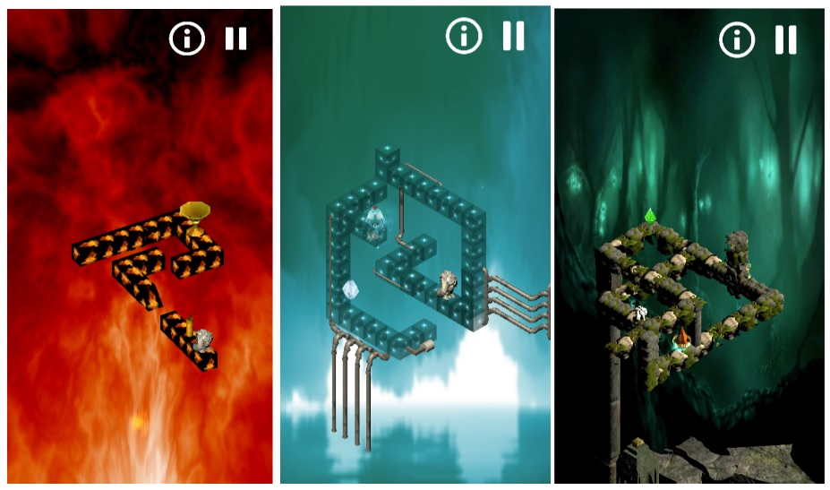
The final comprehensive project of CSCI-571 Web Technologies from University of Southern California computer science course. It is an Android Development project, which allows users to search for latest news, look at detailed information about them, bookmark those news and post on Twitter about them.
Environment: Android Studio
Language: Java/JSON
API: Guadian API/Google Trends API/Open Weather API
Libraries: Picasso/Volley
see project demo on Youtube
see source code
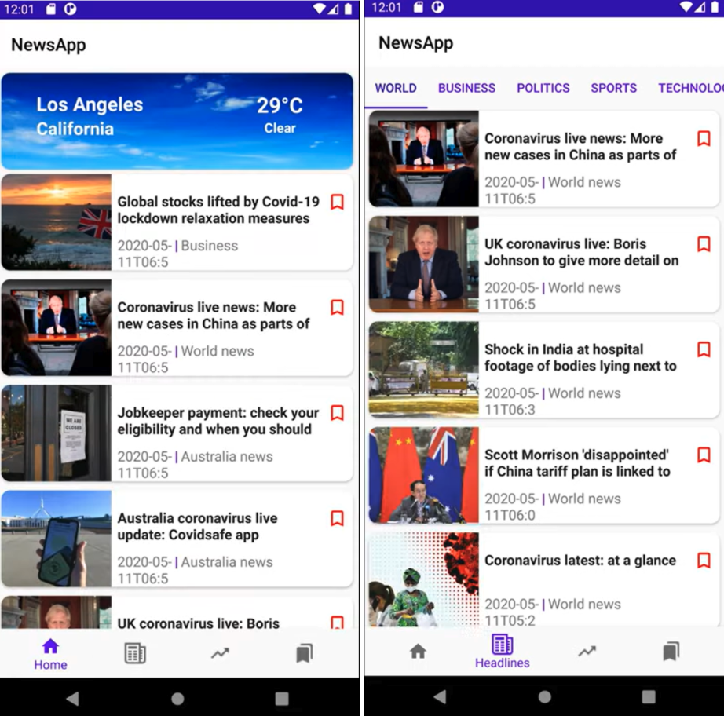
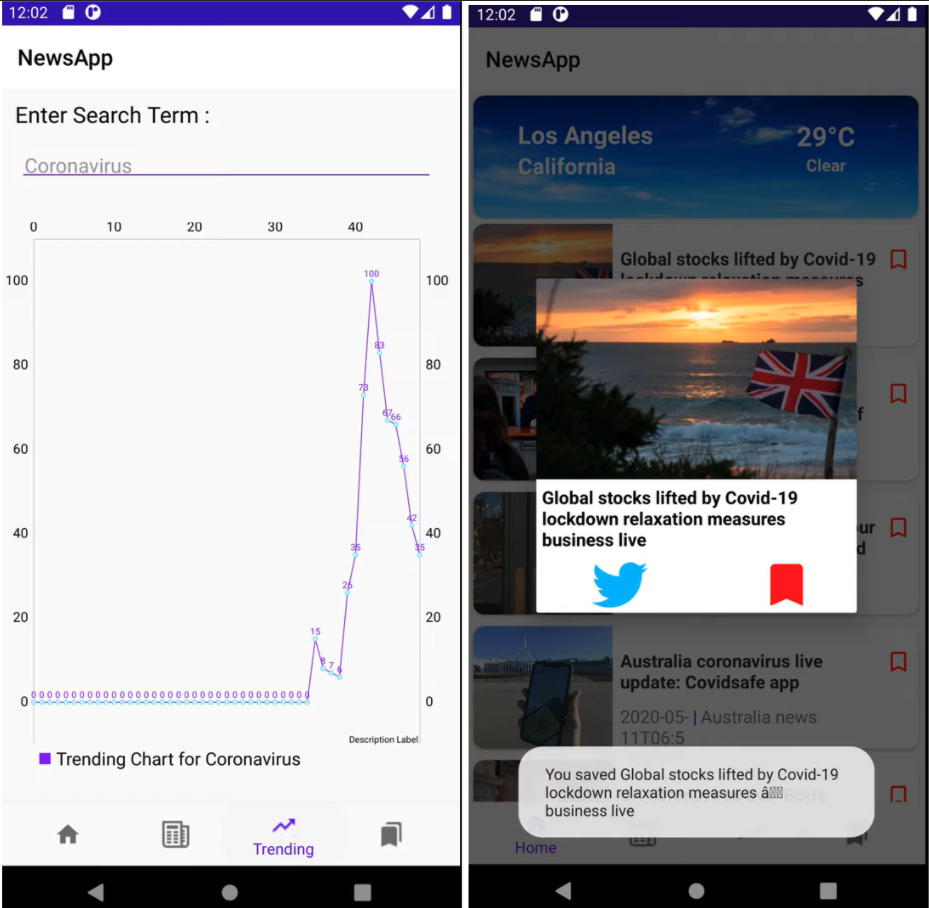
Full Stack Web Development Project: News App
see website
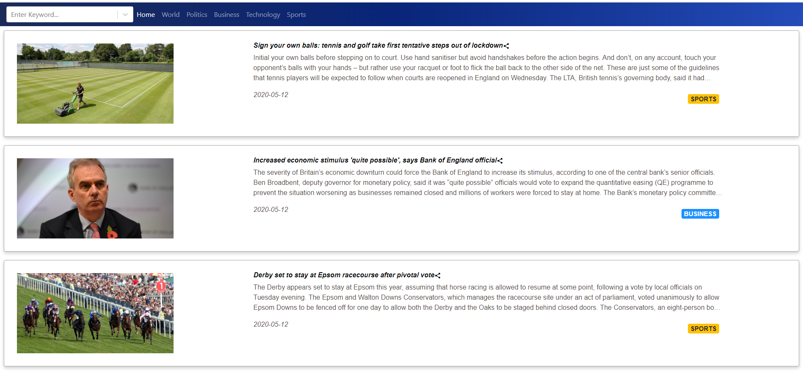
This is a webpage to display top headlines for Guardian News. Based on the selection by the user, the top-headlines could be for any of the following domains – world, politics, business, technology and sports.
Used AJAX and JSON technologies.
Used a combination of HTML5, React-Bootstrap, and React.js on client side.
Used JavaScript / Node.js on server side.
Used React-Bootstrap to enhance the user experience using responsive design.
Delpoyed to Amazon Web Services(AWS), now Heroku.
Used Guardian News API
see source code
Full Stack Web Development Project: Google News
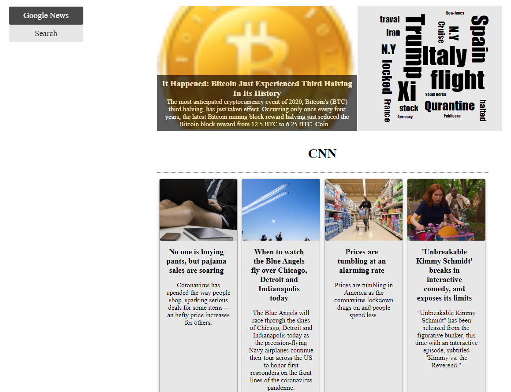
This is a webpage that allows you to search for news information using the Google News API and the results will be displayed in card format.
Used Python programming language.
Used Google News API.
Used a JSON parser in Python.
Used Flask in Python.
Deloyed to AWS
see source code
The final project of CSCI-599 Mobile Social Game from University of Southern California Computer Science course.
I was the project manager of a seven-person team, the game was made with C# and Unity. This game project includes not only implementation but also product management, market research and game data analysis.
play this game on WebGL
see project demo on Youtube
see design document
see source code
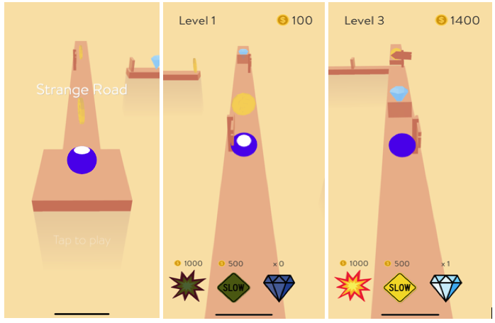
Full Stack Web Development Project: Ko & Company.
see website
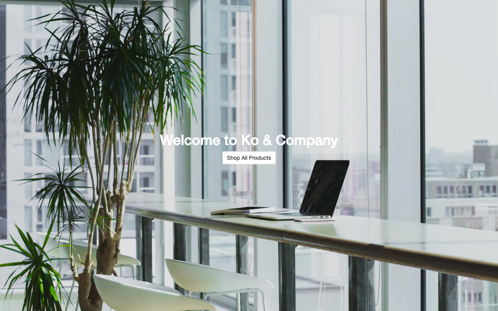
It is an online shopping website. Use NodeJS to write server-side JavaScript, Express and MongoDB to create full-stack JS applications. I spent one month taking the online course www.udemy.com/the-web-developer-bootcamp and made this new web project.
see source code
Our project creates a blockchain structure which encapsulates a website and the sub-websites that it can be redirected to.
Businesses register with the government to prove the legality and authenticity of their website. Following the registration, businesses receive their unique business ID. This governmental business registration guarantees both the legality and security of the website, thereby replacing the need of 3rd party certifications.
They, then connect their server to IOTA's blockchain by providing it with their business ID and a list of trusted websites users can be redirected to. Only sites on this list can be accessed; users cannot access malicious sites since these are not on the trusted list.
Using a private blockchain structure, businesses will also need to validate the registration of their site with IOTA using a password. This password will be required every time a new block is added to the chain; others who don't hold the password cannot add to the chain. This will also increase the security of the websites.
see project
see source code
see blog
The final project of CS340 Introduction to Database from Oregon State University Computer Science course.
I designed a database representing an online shopping/e-commerce system. I chose this topic is because of my business education background and work experience in business. I am always trying to do something entrepreneurial and I think this project is a good start to combine the knowledge of business and computer science.This project contains many aspects, from clients to products, also some details about the shopping carts and manufacturers.
see project
see source code
The final project of CS290 Web Development from Oregon State University Computer Science course.
I use HTML/CSS and JavaScript to build a simple website and publish it online (this website). The project was top 10 best Projects in our class poll, class size 200+, I got 90/80 scores(extra credits)
see source code
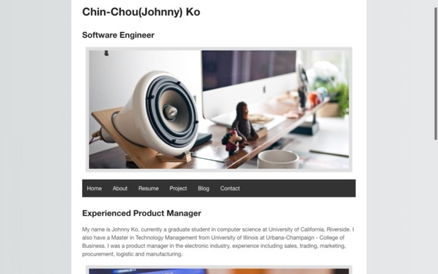
The final project of CS352 Introduction to Usability Engineering from Oregon State University Computer Science course. I was the team leader and led a 4 people team to complete it, members from US, Europe & Asia. We made a food delivery mobile app prototype.
see project
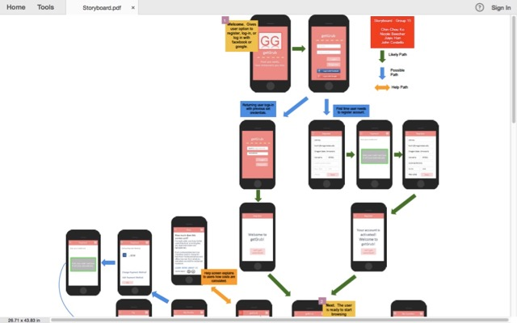
I created a commercial website for company in Adobe Dreamweaver in 2012. It was my side-project for my previous company. At the time 2012, I didn't know too much about HTML/CSS/Javascript. I used the dreamweaver software to make it, modified by some free templates. I was an product manger/international sales representative in the electronics industry.
see project
see source code
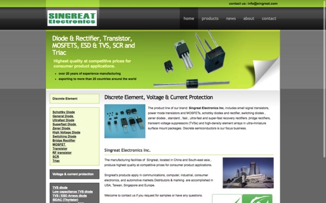
Practicum project at University of Illinois at Urbana–Champaign. I led a team of six members to develop a business consulting report, including segmentation analysis and promotional concept prototyping. Our topic is how to promote Wikipidia, working with Wikimedia Fundation in San Francisco Bay Area. 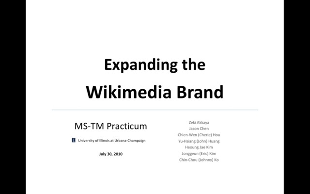